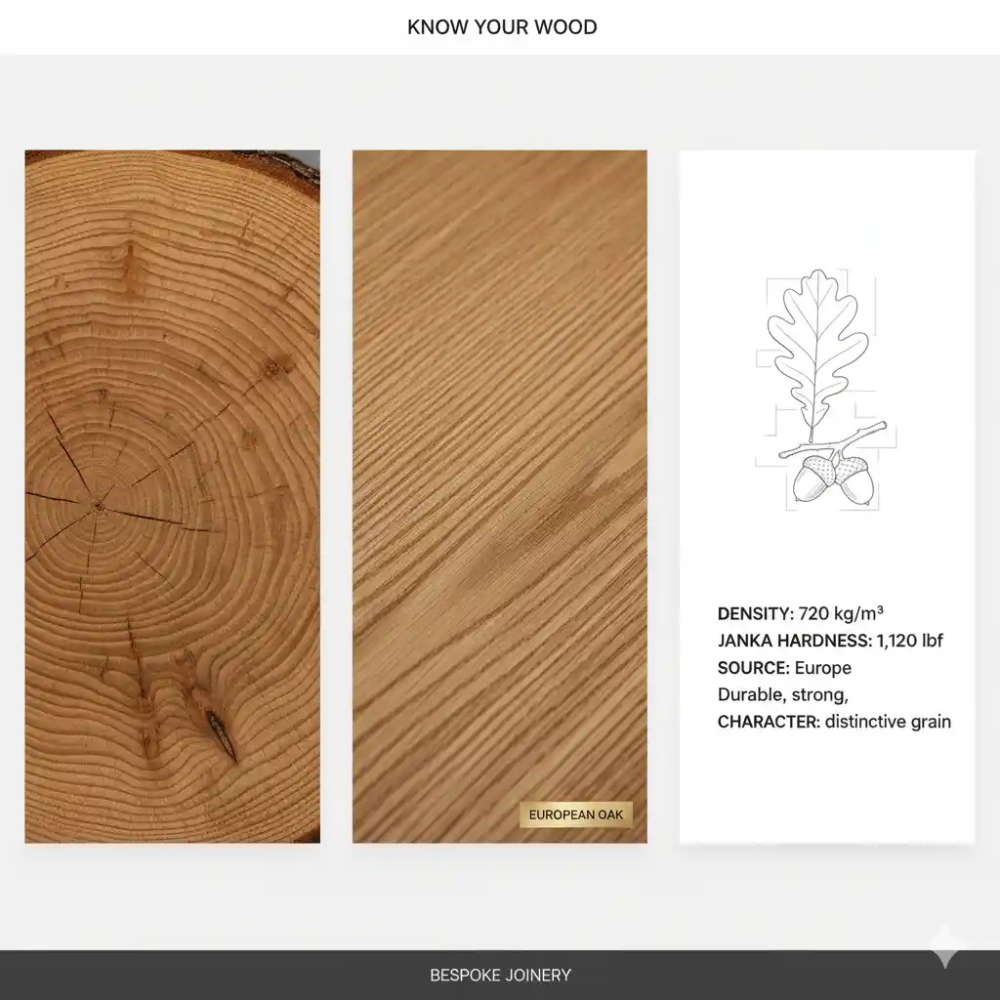
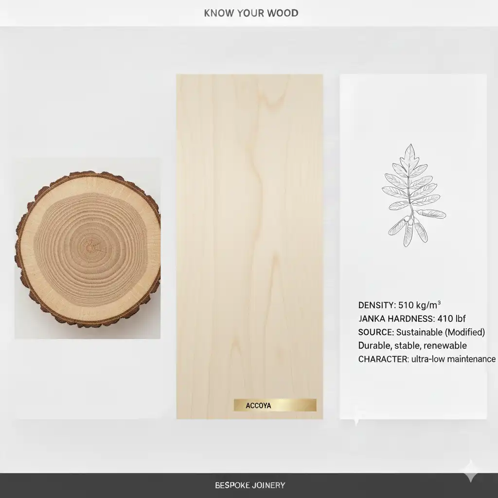
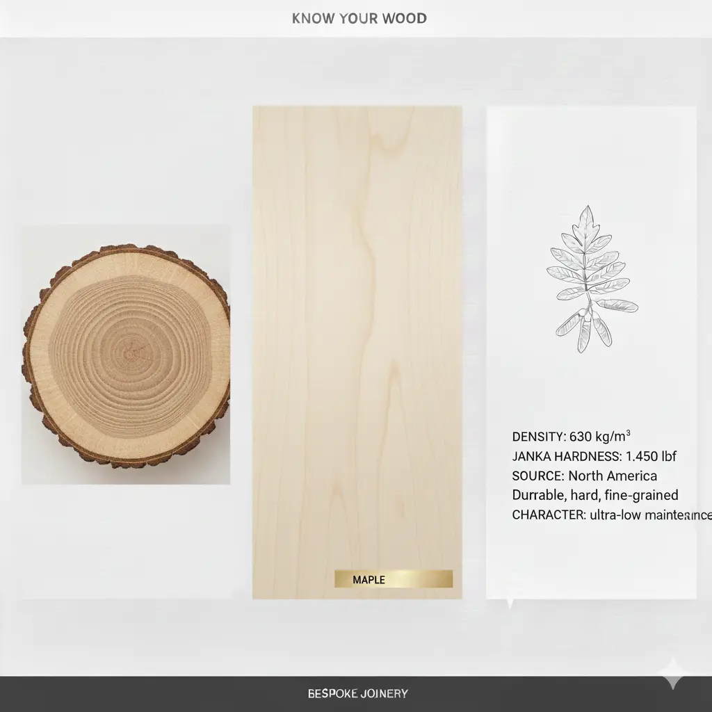
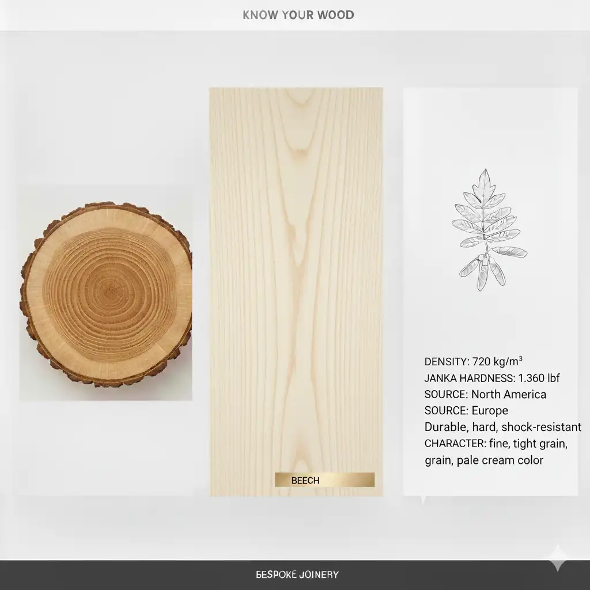

Know Your Wood
Choosing the right timber is essential for the longevity, grain character, and structural integrity of your bespoke project.
-

European Oak - The gold standard for joinery; incredibly durable with a prominent, classic grain.
Cost: High. Pros: Exceptionally strong, rot-resistant, timeless aesthetic. Cons: High tannin content can react with iron fixings. -
 American Black Walnut - A luxury hardwood prized for its deep, rich chocolate tones and elegant finish.
American Black Walnut - A luxury hardwood prized for its deep, rich chocolate tones and elegant finish.
Cost: Premium. Pros: Stunning natural color, dimensionally stable, finishes beautifully. Cons: Softer than oak, expensive. -
 Ash - Known for its shock resistance and pale color; perfect for contemporary, light-filled interiors.
Ash - Known for its shock resistance and pale color; perfect for contemporary, light-filled interiors.
Cost: Mid-range. Pros: Extremely flexible and tough, takes stains well. Cons: Low rot resistance; unsuitable for external use. -
 Sapele - A dense, reddish-brown African hardwood frequently used for high-quality external doors and windows.
Sapele - A dense, reddish-brown African hardwood frequently used for high-quality external doors and windows.
Cost: Mid-range. Pros: Very stable, naturally durable, attractive interlocking grain. Cons: Can be difficult to plane without "tear-out." -

Accoya - High-performance modified timber that is virtually rot-proof; ideal for external heritage restoration.
Cost: High. Pros: 50-year warranty, won't shrink or swell, best for paint finishes. Cons: Acidic nature requires stainless steel screws. -

Maple - An exceptionally hard and stable wood with a smooth, fine grain often used in bespoke cabinetry.
Cost: Mid-to-high. Pros: Hard-wearing, clean look, very smooth texture. Cons: Difficult to stain evenly; can yellow slightly over time. -
 Cherry - Renowned for its warm reddish hues that deepen beautifully over time with light exposure.
Cherry - Renowned for its warm reddish hues that deepen beautifully over time with light exposure.
Cost: High. Pros: Fine, straight grain; machines to a silky finish. Cons: Highly sensitive to UV light (darkens quickly). -
 Tulipwood - The professional choice for painted kitchens due to its smooth surface and lack of grain "show-through."
Tulipwood - The professional choice for painted kitchens due to its smooth surface and lack of grain "show-through."
Cost: Low-to-mid. Pros: Excellent for painting, cost-effective, easy to work. Cons: Bland grain when stained; prone to denting. -
 Iroko - Often called "African Teak," this oily wood is naturally resistant to decay and perfect for outdoor use.
Iroko - Often called "African Teak," this oily wood is naturally resistant to decay and perfect for outdoor use.
Cost: Mid-range. Pros: Maintenance-free outdoors, very durable, resists pests. Cons: Grain can be wild; dust is a known respiratory irritant. -

Beech - A hard, strong timber with a tight grain, traditionally favored for internal furniture and worktops.
Cost: Mid-range. Pros: Odorless (food safe), heavy and tough. Cons: High movement; prone to warping in humid conditions. -
 Scots Pine - A high-quality softwood used for traditional internal joinery and structural period features.
Scots Pine - A high-quality softwood used for traditional internal joinery and structural period features.
Cost: Low. Pros: Sustainable, budget-friendly, traditional look. Cons: Soft and prone to bruising; knots can bleed resin. -
 Premium Birch Plywood - Used in modern "minimalist" joinery for its distinct layered edge and structural stability.
Premium Birch Plywood - Used in modern "minimalist" joinery for its distinct layered edge and structural stability.
Cost: Mid-range. Pros: Incredible strength, modern aesthetic, won't warp. Cons: Edges must be sealed; not for traditional moulding.
Consult the Wood Expert